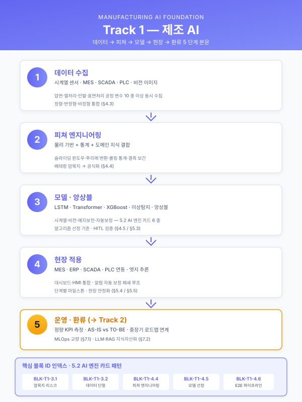

Track 1 — 제조 AI 서두/본문 공통 본문 목차¤
📖 약 20 분 읽기

이 페이지 둘러보기
본 페이지는 약 424 줄 / H2 섹션 6 개 입니다. 우측 목차 (TOC) 를 활용하여 원하는 섹션으로 빠르게 이동할 수 있습니다.
서문¤
본 문서는 철강·금속가공을 중심으로 한 부산·경남권 제조업체(화승, YCP특수강, 코리녹스, 코렌스, 대한제강, 한국철강 등)를 고객으로 하는 제조 AI 관련 정부지원 사업계획서 · 사업신청서 · 수행계획서 · 연구개발계획서 작성 시, 서두와 본문(Track 1) 에 반복적으로 투입되는 내용을 모듈 단위로 재사용 할 수 있도록 설계한 공통 목차이다.
각 섹션은 특정 사업계획서의 한 문단이 아니라, 섹션·문단 단위로 자립적인 블록 으로 구성되어 있다. 한 번 집필된 블록은 고객사·지원사업 포맷이 달라져도 최소한의 수정으로 재사용 가능하도록 설계하였으며, 각 섹션마다 고정 공통 / 업종별 교체 / 규모별 생략 가능 여부를 명시하였다. 고객사명·공정명·수치는 모두 [고객사], [공정], [수치] 플레이스홀더로 표기한다. 철강·금속가공을 기본으로 하되, 고무·폴리머([고무·폴리머 제조사]), 정밀가공 등 타 업종 대응 지점은 대안 문구 또는 옵션 블록으로 표시하였다.
ℹ️ 페이지 정보 (워크스페이스 메타)
플레이스홀더 범례 — [고객사] 고객사명, [공정] 대상 공정명, [수치] 수치, [기간] 기간, [%] 비율.
특정 고객사 전용 문구는 공통 자산과 분리되며, 본 문서는 고정 공통 블록 기준으로 작성됨.
목차 전체 구조¤
1. 사업 개요 및 추진 배경
1.1 과제명·사업기간·추진 체계 요약
1.2 제조 AI 도입 필요성 (거시 환경)
1.3 철강·금속가공 산업의 디지털 전환 당위성
1.4 고객사 현황 요약 및 핵심 문제의식
2. 기업 현황 및 대상 공정 분석
2.1 도입기업 개요 및 재무 현황
2.2 대상 공정의 제조 프로세스 및 특성
2.3 기존 스마트공장·ICS/MES 구축 이력
2.4 제조 데이터 보유 현황
3. 현황 및 문제점 (AS-IS)
3.1 공정 운영의 인적 의존성 및 암묵지 리스크
3.2 데이터 단절 및 비정형·이미지 기반 관리의 한계
3.3 품질 편차 및 불량 원인 추적 체계 부재
3.4 실시간 운영·의사결정 체계의 공백
3.5 종합 위기 직면 (구조적 문제 요약)
4. 목표 모습 (TO-BE) 및 제조 AI 도입 전략
4.1 TO-BE 개념도 및 핵심 전략
4.2 AI 적용 공정 및 기능 분류
4.3 활용 데이터 유형 및 수집 설계
4.4 피쳐 엔지니어링 접근
4.5 모델·알고리즘 선정 기준 및 앙상블 구성
4.6 데이터 → 피쳐 → 모델링 → 현장 적용 전체 파이프라인
5. 구축 상세 내용
5.1 데이터 수집·정형화 단계
5.2 AI 엔진 개발 단계
5.3 Human-in-the-loop 검증 체계
5.4 기존 시스템(MES/ERP/SCADA/PLC) 연동 방안
5.5 단계별 추진 일정 및 마일스톤
6. 기대효과 및 성과 지표
6.1 정량적 기대효과 (AS-IS vs TO-BE)
6.2 정성적 기대효과 및 제조혁신 연계성
6.3 핵심 성과 지표(KPI) 및 측정 방법
6.4 중장기 로드맵과의 연계
7. Track 2·3 연계 섹션 (선택 삽입)
7.1 MLOps 및 지속적 개선 체계 (→ Track 2)
7.2 LLM·RAG 기반 지식자산화 (→ Track 3)
각 소섹션별 카드¤
1.1 과제명·사업기간·추진 체계 요약¤
- 목적: 사업계획서 맨 앞에서 과제를 한 문단으로 정의하고 심사자에게 전체 이미지를 제공한다.
- 포함 내용:
- 과제명(한 줄) 및 과제의 핵심 키워드 3~5개
- 사업기간(개월 수) · 사업비 규모 · 지원금/자부담 비율
- 주관기관 및 (해당 시) 공동수행기관 · 수요기업 간 역할 분담
- 본 사업이 지원사업 공고의 어떤 주제·트랙에 해당하는지 명시
- 삽화·도식 후보: 추진체계도(주관-공동-수요 삼각 구조), 기간·예산 요약 테이블. 문서 상단 1페이지 내 배치.
- 고객사별 가변 여부: 공통 골격 고정, 금액·기간·기관명만 교체.
1.2 제조 AI 도입 필요성 (거시 환경)¤
- 목적: "왜 지금, 제조업에 AI인가"를 국내외 거시 환경으로 정당화한다.
- 포함 내용:
- 글로벌 제조업 저성장 기조 및 공급과잉 · 인건비 상승 · 숙련인력 고령화
- 선진국 제조기업의 IoT·CPS·AI 기반 자율 네트워크 제조 전환 트렌드
- 국내 제조업의 DX 4단계 모델(디지털화 → 공급사슬 통합 → 플랫폼 → 신사업) 중 현재 위치
- 중대재해처벌법 · ESG 등 규제 변화로 인한 표준·데이터 기반 운영의 불가피성
- 정부 지원정책 맥락(스마트공장, 대중소상생, 디지털 경남 등)
- 삽화·도식 후보: 글로벌 철강 수요·생산·가동률 그래프, DX 4단계 계단형 다이어그램, 제조 데이터·AI 투자 트렌드 막대차트. 섹션 도입부 2~3개 배치.
- 고객사별 가변 여부: 공통 고정. 업종별로는 철강/고무/정밀가공 통계 그래프만 교체.
1.3 철강·금속가공 산업의 디지털 전환 당위성¤
- 목적: Track 1의 핵심 도메인인 철강·금속가공에 초점을 맞춰 AI 도입의 산업적 명분을 확립한다.
- 포함 내용:
- 철강산업 수요 정체 및 다품종 소량 생산 체제 확대
- "감과 수작업"에 의존하는 기존 방식의 한계
- 압연·열처리·인발·필거밀 등 핵심 공정의 복잡도(변수 10종 이상 동시 최적화)
- 고부가가치화 요구(듀플렉스강, 고정밀 두께/공차 ±0.05mm 수준)와 현장 운영의 괴리
- 옵션 블록: 고무·폴리머([고무·폴리머 제조사]) → 배합·경화·압출 공정 편차 / 정밀가공 → 치수 정밀도 · 열영향
- 삽화·도식 후보: 공정 복잡도 분석 인포그래픽(변수 간 상호 연동), 다품종 소량 생산 증가 추이 그래프. AS-IS 섹션 바로 앞에 배치해 문제의식 교량 역할.
- 고객사별 가변 여부: 업종별 교체(철강 vs 고무·폴리머 vs 정밀가공 블록을 분리 관리).
1.4 고객사 현황 요약 및 핵심 문제의식¤
- 목적: 일반 담론에서 해당 고객사의 구체 상황으로 좁혀 심사자에게 "이 기업은 왜 이 과제가 필요한가"를 한 페이지로 전달한다.
- 포함 내용:
- [고객사] 주력 제품·주요 공정·핵심 고객사 · 연혁
- 현재 스마트공장 수준(기초/중간1/중간2/고도화)과 기존 구축 자산
- 현재 직면한 3~4개 구조적 문제를 블렛으로 요약
- 본 사업이 해결하고자 하는 핵심 과제 (한 줄 명제문)
- 삽화·도식 후보: 4분할 문제인식·해결방안 요약도([중견 스테인리스 냉연사 스타일]), 기업 연혁 타임라인, 주요 고객사 로고 벽.
- 고객사별 가변 여부: 고정 골격 + 고객사별 전면 교체.
2.1 도입기업 개요 및 재무 현황¤
- 목적: 지원사업 공식 서식 요구 항목(기업정보·재무현황)을 충족한다.
- 포함 내용: 기업명·대표자·소재지·업종코드·주생산품·종업원수·최근 3개년 매출/영업이익/수출액/부채비율·스마트공장 지원 이력.
- 삽화·도식 후보: 표 형태(서식 양식 준용), 본사·공장 전경 사진, 주요 인증서 썸네일 그리드.
- 고객사별 가변 여부: 고객사별 전면 교체. 골격은 공통 서식.
2.2 대상 공정의 제조 프로세스 및 특성¤
- 목적: AI를 적용할 대상 공정의 기술적 맥락을 명확히 정의한다.
- 포함 내용:
- 원재료 입고 → [공정1] → [공정2] → ... → 출하에 이르는 전체 플로우
- 대상 공정의 핵심 변수(온도·압력·속도·패스 수·인발률 등)
- 품질에 직결되는 변수 조합 및 왜 단일 변수로 설명 불가능한지 서술
- 국제 인증 · 선급 인증 보유 현황(ISO 9001/14001, IATF 16949, AS9100 등)
- 삽화·도식 후보: 전체 공정 플로우 다이어그램(아이콘 기반), 공정 설비 사진 + 기술 스펙 캡션, 핵심 변수 상호작용 맵.
- 고객사별 가변 여부: 업종별 교체 + 고객사별 공정 상세 교체.
2.3 기존 스마트공장·ICS/MES 구축 이력¤
- 목적: 본 사업이 "처음 시작"이 아니라 기존 기반 위에 "고도화"를 추가한다는 단계적 연속성을 보여준다.
- 포함 내용: 연도별 구축 시스템 테이블(MES/ERP/ICS/APS/FEMS 등), 수집 중인 설비 데이터 규모, 현재 스마트공장 수준 진단 결과와 목표 수준.
- 삽화·도식 후보: 연도별 마일스톤 타임라인, ICS/MES 주요 화면 캡처 그리드, 수준진단 레이더 차트.
- 고객사별 가변 여부: 규모별 생략 가능(소기업은 축약, 중견 이상은 필수).
2.4 제조 데이터 보유 현황¤
- 목적: AI 학습의 원재료가 되는 데이터 자산의 규모·유형·품질을 입증한다.
- 포함 내용:
- 공정별 · 설비별 데이터 유형(시계열 센서, PLC 로그, MES/SCADA DB, 비전 이미지, 문서·엑셀) 매트릭스
- 수집 주기 · 누적 규모(건수 · GB) · 구축 위치 · AI 도입 대상 여부 표기
- 데이터 품질 상태(정형/반정형/비정형, OCR 필요 여부 등)
- 삽화·도식 후보: 데이터 보유현황 대형 표([강관 제조사 스타일]), 데이터 볼륨·유형 파이/스택 차트.
- 고객사별 가변 여부: 고객사별 전면 교체. 표 골격과 컬럼 정의는 공통.
3.1 공정 운영의 인적 의존성 및 암묵지 리스크¤
- 목적: "왜 AI여야만 하는가"의 첫 번째 근거 — 사람에만 의존할 수 없다는 점을 설득한다.
- 포함 내용:
- 1~2명 베테랑 숙련공의 머릿속 경험(암묵지)에 100% 의존하는 설계·운영 구조
- 핵심 인력 퇴직 시 공정 역량이 즉각 마비되는 치명적 리스크
- 작업자별 숙련도 차이로 인한 설계 편차 ±[수치]% 발생
- 수식화된 매뉴얼 부재, Excel·수기 메모 기반 파편적 관리
- 삽화·도식 후보: "암묵지 의존 구조 리스크" 인포그래픽([강관 제조사 스타일]), 문제점-현황-리스크 3열 표, 공정 복잡도 분석 다이어그램(변수 수~[수치]만 조합).
- 고객사별 가변 여부: 공통 고정 (모든 고객사 공통). 수치만 교체.
3.2 데이터 단절 및 비정형·이미지 기반 관리의 한계¤
- 목적: 두 번째 근거 — 데이터는 존재하지만 단절·비정형이어서 AI 학습과 의사결정에 쓸 수 없음을 지적한다.
- 포함 내용:
- 원재료 밀시트·성적서가 PDF/이미지로만 보관되어 검색·분석 불가
- MES와 품질 원본 데이터 간 자동 연동 단절, 실무자 수기 입력 의존
- 휴먼 에러 발생률 [수치]%, 처리 시간 건당 [수치]분
- 공정별 · 공급사별 양식이 제각각 → 표준화 원천 차단
- 삽화·도식 후보: "아날로그식 밀시트 관리로 데이터 단절" 컨셉 이미지, 문서·이미지·엑셀 파편화 현황 사진 벽.
- 고객사별 가변 여부: 공통 고정. 원재료 문서 종류만 업종별 교체(밀시트/배합표/도면 등).
3.3 품질 편차 및 불량 원인 추적 체계 부재¤
- 목적: 세 번째 근거 — 불량 발생 시 원인 분석에 수일이 소요되는 후행적 운영 실태를 드러낸다.
- 포함 내용:
- 완제품 불량 발생 시 투입 원소재 물성치 ↔ 가공 결과 상관관계 추적 데이터 기반 부재
- Heat No./LOT No. 기반 자동 역추적 시스템 부재, 원인 규명에 [수치]일 소요
- 품질 편차 ±[수치]% 로 재작업률 [수치]%
- 표준운전체계 부재로 공정 재현성 · 운영 안정성 미확보
- 삽화·도식 후보: 불량 원인 규명 프로세스 흐름도(현재 소요시간 강조), 품질 편차 산점도.
- 고객사별 가변 여부: 공통 고정. 공정 명칭과 수치만 교체.
3.4 실시간 운영·의사결정 체계의 공백¤
- 목적: 네 번째 근거 — 수작업 집계와 사후 보고 구조의 한계를 지적한다.
- 포함 내용:
- 종이 일보 기반 · 익일 확인 구조로 실시간 생산 진행 파악 불가
- 경영진 의사결정 필요 시점에 현장 정보 부재, 신속 대응 곤란
- 영업-생산-품질 간 정보 비대칭으로 고객 납기 대응 지연
- 설비 이상 징후 사전 감지 불가, 사후 대응만 가능
- 삽화·도식 후보: 종이 일보·엑셀 집계 현황 사진, 현재 대시보드 조회 소요 시간 비교 막대차트.
- 고객사별 가변 여부: 공통 고정, 일부 규모별 생략 가능(소기업은 서술 축약).
3.5 종합 위기 직면 (구조적 문제 요약)¤
- 목적: 3장 전체를 1페이지로 요약하여 4장(TO-BE)으로 넘어가는 교량 역할을 한다.
- 포함 내용: "현재 직면 상황 / 핵심 구조적 문제 / 전환 시급성" 3단 요약표.
- 삽화·도식 후보: 3단 요약 테이블([강관 제조사 스타일]), 위기-전환 화살표 다이어그램.
- 고객사별 가변 여부: 공통 고정.
4.1 TO-BE 개념도 및 핵심 전략¤
- 목적: AS-IS 대비 바뀌는 운영 구조를 한 장으로 보여준다.
- 포함 내용:
- AS-IS → TO-BE 대비 표(3~5개 혁신 영역)
- 핵심 추진 전략 3단계(예: 지식 추출 → 지식 모델링 → 지능형 어시스턴트)
- 본 사업으로 달성할 수준(중간1 → 중간2 또는 중간2 → 고도화)
- 삽화·도식 후보: AS-IS/TO-BE 좌우 대조 다이어그램, 3-STEP Solution Architecture.
- 고객사별 가변 여부: 공통 템플릿 + 문구 교체.
4.2 AI 적용 공정 및 기능 분류¤
- 목적: 정부 서식의 "AI 적용 공정" · "AI 기능 분류" 요구 항목을 충족하면서 본 사업의 적용 범위를 명확화한다.
- 포함 내용:
- 7대 공정 영역(재무/인사, 제품기획/설계, 구매, 제조공정, 물류, 환경/에너지/안전, 사후서비스) 중 대상 선택
- 5대 AI 기능(인지·예측·자동화·소통·생성) 중 대상 선택 및 근거
- 대상 공정별 AI 도입 목적(예지보전 / 품질관리 / 공정최적화 / 공급망 / 에너지 / 안전 / 공정설계 지능화)
- 삽화·도식 후보: 공정 × 기능 매트릭스 체크 표, AI 도입 목적별 기대효과 아이콘 세트.
- 고객사별 가변 여부: 사업별 교체(동일 고객사라도 사업마다 범위가 다름).
4.3 활용 데이터 유형 및 수집 설계¤
- 목적: 학습·추론에 투입될 데이터를 유형별로 정리하고 수집 설계 방침을 서술한다.
- 포함 내용:
- 시계열 센서 데이터(온도·압력·속도·진동): PLC 연동, 초·분 단위 수집
- 설비·장비 로그: PLC/SCADA에서 이벤트·알람 로그 수집
- MES/ERP/APS DB: 생산실적·품질검사·재고·작업지시
- 비전 이미지: 표면결함·치수측정 등
- 비정형 문서: 공정설계서·작업표준서·밀시트(OCR 대상)
- 수집 주기 · 저장소(TSDB/RDB/Vector DB/Object Storage) 설계
- 삽화·도식 후보: 데이터 수집 아키텍처 다이어그램(Edge → Gateway → DAQ → DB), 데이터 유형 × 저장소 매핑 표.
- 고객사별 가변 여부: 업종별 교체(철강은 시계열·PLC 비중 높음, 고무·폴리머는 배합·경화 시계열, 정밀가공은 비전 비중 높음).
4.4 피쳐 엔지니어링 접근¤
- 목적: 원시 데이터에서 모델 입력으로 가는 설계 사고를 드러낸다 (심사자 가점 요소).
- 포함 내용:
- 도메인 지식 기반 피쳐: 패스 이력 누적값, 롤링 통계(평균·표준편차·min-max), 공정 구간 간 차분
- 자동 피쳐 생성: tsfresh · featuretools 등 시계열 피쳐 자동 추출
- 피쳐 선정 기준: 상관관계·상호정보량·SHAP 기반 중요도
- 피쳐 스토어 개념 도입(Track 2 MLOps로 교량)
- 삽화·도식 후보: 원시 데이터 → 피쳐 → 모델 입력으로 가는 3단 플로우, 피쳐 카테고리 분류표.
- 고객사별 가변 여부: 공통 고정. 예시 피쳐 이름만 업종별로 교체.
4.5 모델·알고리즘 선정 기준 및 앙상블 구성¤
- 목적: 단일 알고리즘이 아닌 문제 유형별 적합 모델 을 선정하는 사고 틀을 보인다.
- 포함 내용:
- 문제 유형별 후보: 회귀(XGBoost·LightGBM), 시계열 예측(LSTM·Transformer·TCN), 이상탐지(Isolation Forest·AutoEncoder·OneClassSVM), 분류(CNN for 비전, Transformer for 문서), 추천(유사도 기반 Retrieval + LLM)
- 선정 기준: 데이터 규모 · 해석가능성 · 추론 지연 · 재학습 주기 · 현장 엣지 배포 가능성
- 앙상블 전략: Stacking · Weighted Average · Model Router(문제 성격별 분기)
- 베이스라인 모델 → 후보 모델 → 채택 모델의 선정 프로세스
- 삽화·도식 후보: 문제유형 × 후보모델 매트릭스, 앙상블 아키텍처 다이어그램, 모델 선정 의사결정 트리.
- 고객사별 가변 여부: 공통 고정. 대상 문제에 따라 채택 모델만 다르게 표기.
4.6 데이터 → 피쳐 → 모델링 → 현장 적용 전체 파이프라인¤
- 목적: 4장 전체를 한 장의 엔드투엔드 파이프라인 그림으로 압축한다.
- 포함 내용: 데이터 수집 → 정제 · 라벨링 → 피쳐 엔지니어링 → 학습/평가 → 배포 → 추론 · 피드백 → 재학습 루프.
- 삽화·도식 후보: 대형 파이프라인 다이어그램 1장(한 페이지 풀 사이즈). Mermaid 예시:
- 고객사별 가변 여부: 공통 고정 (고객사별 적용 시 노드 이름만 일부 교체).
5.1 데이터 수집·정형화 단계¤
- 목적: 구축 1단계로서 데이터 기반을 마련하는 실행 계획.
- 포함 내용: 데이터 수집 범위 · 주기 · 규모 (예: 과거 [수치]년 누적 공정설계 [수치]건, 밀시트 [수치]건), 단위 통일 체계(mm, ℃, %), 설비 코드 · 재질 코드 표준화, 관계형 DB · Vector DB · Object Storage로의 이관, 품질 검증 기준(누락·이상치·중복).
- 삽화·도식 후보: 단계별 절차 블록 다이어그램, 표준화 전·후 예시 테이블.
- 고객사별 가변 여부: 공통 골격 + 수치 교체.
5.2 AI 엔진 개발 단계¤
- 목적: 본 사업에서 개발·운영할 AI 엔진의 내부 구조를 서술하며, 시나리오 특성에 맞는 엔진 패턴을 선택·조합 한다. 단일 서술이 아니라 시나리오별 교체 블록으로 운영.
- 제공되는 엔진 패턴 (변형 카드) — 상세는 별도 문서
track/track1-engine-cards.md참조: 5.2-a유사 사례 검색·추천 엔진 — 공정설계·레시피·설정 추천 유형 (SCN-STL-07, SCN-MET-05, SCN-MET-07 등)5.2-b시계열 품질·이탈 예측 엔진 — 품질 예측·실시간 피드포워드 유형 (SCN-STL-01/03/05, SCN-RUB-01/04, SCN-MET-01 등)5.2-c비전 검사 엔진 — 표면결함·치수·행동 인식 유형 (SCN-STL-10/11, SCN-MET-02/03/06, SCN-RUB-02/05, SCN-SAF-01 등)5.2-d예지보전 엔진 — 이상탐지·RUL·CMMS 연동 유형 (SCN-STL-09, SCN-MET-01, SCN-UTL-02 등)5.2-e공정 최적화·제어 엔진 — BO·RL·제약 최적화 유형 (SCN-STL-02/06, SCN-MET-04, SCN-RUB-03, SCN-UTL-01/05 등)5.2-fLLM·RAG 지식검색 엔진 — SOP·도면·보고서·MSDS 유형 (SCN-LLM-01~04, SCN-STL-08, SCN-MET-07, SCN-SAF-03 등)- 포함 내용: 선택된 엔진 패턴별 구조(모듈 구성 · 입출력 · 성능 KPI · 제약 · 선행조건), 복수 패턴 결합 시 엔진 간 데이터·피드백 공유 지점, Track 2 운영 연계 1 문단.
- 삽화·도식 후보: 본 섹션 표지로 6개 패턴 개요 매트릭스(시나리오 × 엔진 패턴) 1 장 + 선택 패턴의 엔진 내부 모듈 다이어그램(변형 카드 참조).
- 고객사별 가변 여부: 시나리오별 전면 교체. 대상 시나리오(카탈로그
SCN-XXX)에 따라 해당 변형 카드로 교체하며, 결합 사업의 경우 복수 카드를 병기.
5.3 Human-in-the-loop 검증 체계¤
- 목적: 초기 AI가 현장 신뢰를 얻기 위한 숙련자 검토 루프 설계.
- 포함 내용: 검증 UI 화면 구성(고객 스펙 요약 → AI 추천 → 유사 오더 참조 → 예상 결과 → 검증 버튼), 피드백 프로세스("사용가능 / 수정 필요 / 부적합" 3단 평가), 숙련자 피드백 · 실제 생산 결과를 학습 데이터로 자동 축적하는 선순환.
- 삽화·도식 후보: 검증 UI 목업(와이어프레임), HITL 루프 사이클 다이어그램.
- 고객사별 가변 여부: 공통 고정 (모든 고객사에 동일 패턴).
5.4 기존 시스템(MES/ERP/SCADA/PLC) 연동 방안¤
- 목적: 신규 AI 시스템이 기존 자산과 어떻게 결합되는지 설계.
- 포함 내용: 기존 MES 작업지시 화면에 "AI 공정설계 조회" 기능 추가, 승인된 레시피를 MES 작업지시서로 자동 변환, 설비 PLC와의 데이터 양방향 인터페이스, ERP/APS와의 생산계획 연동.
- 삽화·도식 후보: 시스템 연동 아키텍처(기존 · 신규 · Interface 레이어 구분), API/메시지큐 흐름도.
- 고객사별 가변 여부: 고객사별 교체(기존 시스템 벤더와 버전에 따라 상세 교체).
5.5 단계별 추진 일정 및 마일스톤¤
- 목적: 수행 가능성(Feasibility) 입증.
- 포함 내용: 월 단위 간트차트, 단계별 산출물, 의사결정 게이트, 검수 기준.
- 삽화·도식 후보: 간트차트, 마일스톤 타임라인.
- 고객사별 가변 여부: 사업기간별 교체(9개월 · 1년 · 다년 과제 각각 템플릿 보유).
6.1 정량적 기대효과 (AS-IS vs TO-BE)¤
- 목적: 심사자가 가장 주목하는 수치 효과를 한 표로 요약.
- 포함 내용: 혁신영역별 AS-IS / TO-BE / 개선효과 3열 표. 예: 공정설계 [기간(AS-IS)]/건 → [기간(TO-BE)]/건 (연간 [수치]시간 절감), 품질 편차 ±[수치]% → ±[수치]%, 불량률 [수치]PPM → [수치]PPM, 불량 원인 추적 [기간(AS-IS)] → [기간(TO-BE)] 등.
- 삽화·도식 후보: AS-IS/TO-BE 대조 표, 핵심 지표 전·후 막대 그래프.
- 고객사별 가변 여부: 공통 표 골격 + 수치 교체.
6.2 정성적 기대효과 및 제조혁신 연계성¤
- 목적: 수치로 표현되지 않는 전략적 효과(지식 자산화, 인력 양성, 안전 공장, 글로벌 확장 등)를 서술.
- 포함 내용: 지식 휘발 리스크 완전 제거, 신규 인력 교육 기간 단축, 설계 오류 사전 차단, 작업 안전성, 글로벌 수출 확장 가능성.
- 삽화·도식 후보: 기대효과 5~6개 영역 아이콘 세트, 기업 비전-KPI-AI 효과 정합도 피라미드.
- 고객사별 가변 여부: 공통 고정. 기업 비전 문구만 교체.
6.3 핵심 성과 지표(KPI) 및 측정 방법¤
- 목적: 지원사업 평가 및 정산 대비 측정 가능성 확보.
- 포함 내용: KPI 정의(수율, 불량률, 추천 채택률, 설계 시간, 밀시트 OCR 정확도 등), 측정 주기, 기준값 · 목표값, 측정 도구.
- 삽화·도식 후보: KPI 카드 세트, 대시보드 개념도(Track 2 연결 지점).
- 고객사별 가변 여부: 공통 지표 풀 + 고객사별 선택.
6.4 중장기 로드맵과의 연계¤
- 목적: 본 사업이 단발성이 아니라 고객사 중장기 DX 전략의 한 단계임을 보인다.
- 포함 내용: 3~5년 로드맵(지능형 자율공장 → 수요예측 · 신속 견적 → 스마트 공급망 관리), 본 사업이 담당하는 영역 하이라이트.
- 삽화·도식 후보: 3~5년 DX 로드맵([강관 제조사 스타일 대형 다이어그램]). 6장 마지막 페이지 풀 사이즈.
- 고객사별 가변 여부: 고객사별 교체.
7.1 MLOps 및 지속적 개선 체계 (→ Track 2)¤
- 목적: Track 2 MLOps 섹션으로 자연스럽게 이어지도록 교량 문단 제공.
- 포함 내용: "본 사업에서 구축하는 AI 모델이 도입 초기 성능에 머물지 않고 지속적 피드백과 신규 데이터를 바탕으로 스스로 성능을 유지·향상시키는 자기 진화형 AI 운영 환경이 필수이며, 이에 대한 상세는 [별도 섹션/별첨]에서 서술함" 2~3 문단.
- 삽화·도식 후보: 재학습 루프 축소판, Track 2 상세 도식의 티저.
- 고객사별 가변 여부: 공통 고정.
7.2 LLM·RAG 기반 지식자산화 (→ Track 3)¤
- 목적: Track 3 LLM+RAG 섹션으로의 교량 문단.
- 포함 내용: 비정형 공정설계서·표준서·작업일지를 Vector DB로 구축, RAG 기술 적용하여 신규 수주 시 유사 과거 사례 검색 및 최적 공정 파라미터 자동 추천, 대화형 AI 에이전트 인터페이스로 실무자 의사결정 지원 — 3~4 문단.
- 삽화·도식 후보: LLM+RAG 컨셉 다이어그램 축소판.
- 고객사별 가변 여부: 공통 고정.
공통 자산 vs 특화 지점 맵¤
| 섹션 | 재사용 유형 | 설명 |
|---|---|---|
| 1.1 과제 요약 | 공통 골격 + 수치/기관명 교체 | 서식 기반, 고정 |
| 1.2 거시 환경 | 공통 고정 | 전 고객사·전 사업 동일 사용 가능 |
| 1.3 산업 당위성 | 업종별 교체 | 철강 / 고무·폴리머 / 정밀가공 3개 버전 관리 |
| 1.4 고객사 현황 | 고객사별 전면 교체 | 플레이스홀더 없이 매번 새로 씀 |
| 2.1 기업 개요 | 고객사별 전면 교체 | 서식 준수 |
| 2.2 대상 공정 | 업종+고객사별 교체 | 업종별 템플릿 → 고객사 공정 상세로 확장 |
| 2.3 구축 이력 | 고객사별 교체 / 규모별 생략 가능 | 소기업은 축약 |
| 2.4 데이터 보유 현황 | 표 골격 공통 + 내용 교체 | 컬럼 정의 공통, 값은 전면 교체 |
| 3.1 암묵지 리스크 | 공통 고정 | 수치만 교체. Track 1 전체에서 가장 재사용 높음 |
| 3.2 데이터 단절 | 공통 고정 | 원재료 문서 종류만 교체 |
| 3.3 품질·불량 추적 | 공통 고정 | 공정명·수치만 교체 |
| 3.4 실시간 공백 | 공통 고정 / 소기업 생략 가능 | |
| 3.5 종합 요약 | 공통 고정 | |
| 4.1 TO-BE 개념 | 공통 템플릿 | Solution Architecture 3-STEP은 공용 |
| 4.2 AI 적용 공정 | 사업별 교체 | 지원사업 서식과 연동 |
| 4.3 데이터 유형 | 업종별 교체 | |
| 4.4 피쳐 엔지니어링 | 공통 고정 | 피쳐 카테고리 정의는 불변 |
| 4.5 모델 선정 | 공통 고정 | 매트릭스는 재사용, 채택 모델만 교체 |
| 4.6 전체 파이프라인 | 공통 고정 | 대형 다이어그램 공용 |
| 5.1~5.4 구축 상세 | 고객사·사업별 교체 | |
| 5.5 일정 | 사업기간별 템플릿 | |
| 6.1 정량효과 | 표 골격 공통 + 수치 교체 | |
| 6.2 정성효과 | 공통 고정 | |
| 6.3 KPI | 공통 풀 + 선택 | |
| 6.4 중장기 로드맵 | 고객사별 교체 | |
| 7.1/7.2 Track 2·3 교량 | 공통 고정 |
재사용 효율이 높은 Top 5 블록: 3.1 암묵지 리스크, 3.2 데이터 단절, 4.4 피쳐 엔지니어링, 4.5 모델 선정, 4.6 엔드투엔드 파이프라인 — 이 5개는 철강·고무·정밀가공 전반에서 거의 그대로 재사용 가능.
특화 지점 대표 예시 3개: 1. 1.3 산업 당위성 — 철강(수요 정체 + 다품종 소량) / 고무·폴리머(배합·경화 편차) / 정밀가공(치수 정밀도)으로 분리 관리. 2. 2.2 대상 공정 — 필거/인발([강관 제조사]), 냉간압연([중견 스테인리스 냉연사]), 압출([고무·폴리머 제조사])처럼 공정 자체가 다름. 3. 5.2 AI 엔진 — 레시피 추천(철강) vs 배합 추천(고무) vs 가공조건 추천(정밀가공)으로 도메인이 바뀜.
Track 2·3 연계 지점¤
- Track 1 → Track 2 (MLOps) 연결 지점
- 주 연결: 4.6 전체 파이프라인 의 "재학습 루프" 노드에서 자연스럽게 Track 2로 분기.
- 보조 연결: 5.3 HITL 의 "피드백 데이터 자동 축적" 서술 직후, 6.3 KPI 의 "모니터링 대시보드" 언급 지점.
-
삽입 방식: "MLOps 상세는 [별도 섹션 / 별첨 N] 에서 구체화" 1~2 문단으로 교량 후 Track 2 블록 통째로 삽입.
-
Track 1 → Track 3 (LLM + RAG) 연결 지점
- 주 연결: 4.3 데이터 유형 의 "비정형 문서(공정설계서·작업표준서·밀시트)" 서술 직후, 또는 5.2 AI 엔진 의 "유사 케이스 검색" 모듈이 사실상 RAG 전조임을 언급하고 Track 3로 넘김.
- 보조 연결: 3.1 암묵지 리스크 에서 "암묵지의 형식지화" 필요성 제기 후 Track 3 방법론을 해결책으로 제시.
- 삽입 방식: LLM 기반 공정설계 지능화를 본 사업 핵심 과제로 삼는 경우([강관 제조사 사례]) Track 3가 본문에 통합되고, 그렇지 않은 경우 별첨으로 분리.
사용 예시 — 철강 대기업 A사 1부 조립¤
가령 대한제강 · 한국철강 수준의 철강 대기업 A사 대상 "전사적 DX 촉진 R&D" 성격의 연구개발계획서 1부를 본 목차로 조립한다고 하면, 1장은 1.1 과제 요약 + 1.2 거시 환경(공통 고정) + 1.3 철강 산업 당위성(철강 블록) + 1.4 A사 현황 순으로 8~10페이지 서두를 구성하고, 2장은 2.1~2.4 의 고객사 교체 블록으로 A사의 압연·열처리·코일 공정과 데이터 보유 현황(PLC 시계열 수십만 건/일, MES 수년치, 밀시트 PDF 수천 건)을 채운 뒤, 3장은 3.1~3.5 의 공통 고정 블록 을 거의 그대로 가져와 수치만 A사 현장 값으로 교체한다.
이어서 4장은 4.1 TO-BE 공통 템플릿 + 4.2 사업별 적용 공정 선택(공정최적화 + 품질관리) + 4.3 데이터 유형(철강 블록, 시계열·PLC 비중 높음) + 4.4·4.5·4.6 공통 고정 블록**으로 구성하여 방법론의 일반성과 깊이를 동시에 보인다. 5장은 A사 기존 MES/ERP 벤더에 맞춰 **5.4 연동 방안**을 전면 교체하고 나머지 **5.1~5.3, 5.5**는 공통 골격에 수치만 교체한다. 6장은 표 골격(**6.1, 6.3)과 공통 문구(6.2, 6.4)를 A사 중장기 로드맵과 정합시키며, 7장에서 MLOps(Track 2)와 LLM/RAG(Track 3)를 별첨으로 삽입하여 R&D 과제의 깊이를 보강한다. 이렇게 하면 약 70~100페이지 분량의 연구개발계획서 1부가 전체 분량의 60~70%가 공통 블록 으로 채워지고, 나머지 30~40%만 A사 고유 내용으로 교체되어, 재사용 효율을 극대화한 구성을 얻을 수 있다.
📌 이 페이지 정보 (개발자용)
- 원본 파일:
track1_공통본문_목차.md - 자산 군: 🔧 기술 트랙
- slug 경로:
track/track1-index.md - 워크스페이스 정책: 원본 .md 수정 0 — hooks 로만 시각 변환
- 자산 자족성 정상화: Phase E7 완료 (잔여 외부 갭 4)